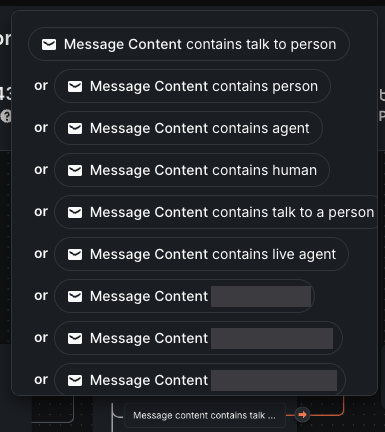
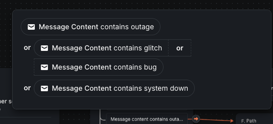
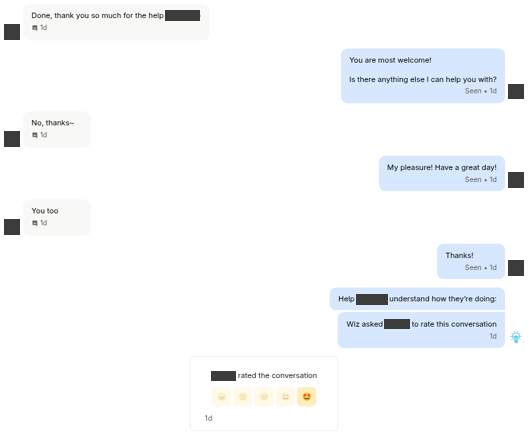
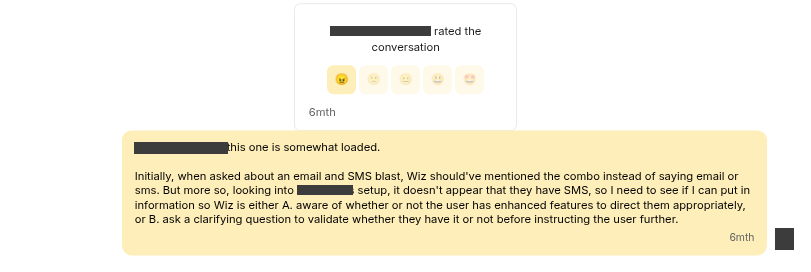
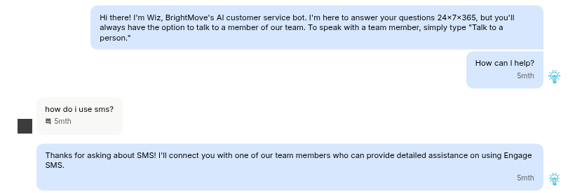
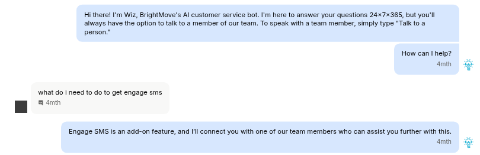
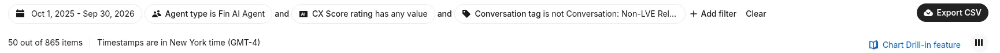
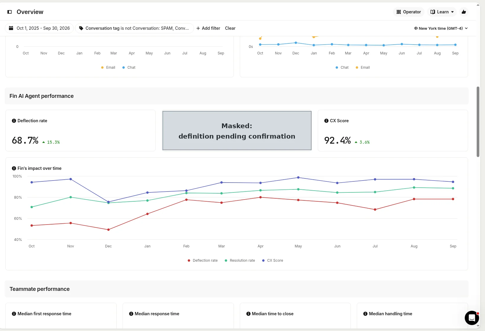

Entry 2: From Wiz to a Person: How BrightMove Keeps AI Support Human
Human-Centered AI Innovation of the Year, Category 227. AI that extends human support rather than replacing it.
1. The model
Shows: customers can reach a person whenever they want, and Wiz hands over what it cannot solve.
BrightMove is a cloud applicant tracking system (ATS) for staffing agencies, HR teams, PEOs and RPOs. Its support chat is answered first by Wiz, an AI support agent built on Intercom Fin, 24/7. The support team works weekdays, 8:30 a.m. to 5:30 p.m. ET.
- Wiz: instant answers from LightHub, BrightMove's knowledge base, at any hour.
- Support team: takes over what Wiz cannot solve. Target response: under 2 hours.
- Engineering: bugs and integration failures. Target response: under 24 hours.
Escalation workflow. When a customer starts a chat, an escalation workflow reads the first message and sends it down one of three paths:
- The customer asks for a person. If the message includes phrases like "talk to a person," "agent," "human" or "live agent," Wiz steps aside. The chat is tagged, the customer is told a person will respond within two hours, and the chat goes straight to the support team. This path has been used in more than 550 customer conversations since January 2026.
- The customer reports a possible outage. If the message mentions an outage, glitch, bug or the system being down, a live system status check runs. If there is a known issue, the customer is pointed to BrightMove's status page, status.brightmove.com. If there is not, or the check itself fails, the chat is assigned to the support team for triage. A reported outage is never left with only the AI.
- Everything else. Wiz answers from LightHub content and its written guidance. Wiz’s guidance is to offer a person after two attempts that don’t resolve the question. When the chat is handed over, a person takes over with the full transcript and owns the outcome. Wiz also reminds customers they can ask for a person at any time.
Example: one line gets a person. In October 2026, a customer's first message was "talk to a person." The chat was routed within seconds, a support team member replied about 2 minutes later, and the login problem was fixed with engineering that morning.
Example: two attempts, then a person. On October 29, 2026, a customer could not save a record. Wiz gave two answers and reminded the customer they could ask for a person. The customer did, and a support team member replied about 3 minutes later. They found a required custom field blocking the save and fixed it in the same chat. The customer rated the conversation 5 out of 5.
Example: two attempts, then an audit. On October 30, 2026, a customer asked why jobs were closing before their end date. Wiz gave two answers, first the end date setting, then workflow triggers. Neither explained it, so the customer asked for a person and was transferred within seconds. A support team member replied under 3 minutes later and had a developer audit the job. It had closed on its original end date; the date was later extended but the job was never reopened, and the team explained how to reopen it.
Human agents: Monday to Friday, 8:30 AM to 5:30 PM Eastern (5 days × 9 hours = 45 hours). Wiz: 24 hours × 7 days = 168 hours, 365 days a year. Supports: the Entry 2 reach claim.
Original screenshot: Escalation workflow
![Intercom workflow builder. A trigger, When customer sends their first message, leads to a branch with three paths. If the message asks for a person, the conversation is tagged, the customer is told a person will reply, usually within two hours, and it is assigned to Tier 1 Support. If the message mentions an outage, a BrightMove System Status check runs: when there is a known issue, the customer is pointed to status.brightmove.com; otherwise a support request is created and the chat is assigned to Tier 1 Support; if the check fails, it goes straight to Tier 1 Support. Everything else goes to Let Fin handle, which uses LightHub content, follows guidance and escalates if needed, then hands over to Tier 1 Support.](../evidence/wiz/escalation-workflow.png)
The escalation workflow that reads each customer’s first message. Source: Intercom Workflows.
Original screenshot: Ask-for-a-person triggers


Phrases that send a chat straight to a person. Three triggers that are employee names are masked. Source: Intercom Workflows.
Original screenshot: Outage triggers


Phrases that start the system status check. Source: Intercom Workflows.
Original screenshot: Wiz’s two attempts and the handover
![Intercom conversation. Wiz greets the customer and says they can type Talk to a person at any time. The customer writes I cannot create a candidate. Wiz answers about user permissions and the steps to create a candidate. The customer writes Cannot save, and Wiz gives a second answer about clearing the browser cache. The customer asks to create a ticket; Wiz reminds them they can say Talk To A Person. The customer writes Talk to a person, and Wiz replies Transferring you to a human agent now. Part of the first answer is trimmed. The customer’s name and avatar are covered by gray boxes.](../evidence/wiz/wiz-two-attempts.png)
Wiz tries twice, reminds the customer they can ask for a person, then hands over (October 2026). Part of Wiz’s first answer is trimmed. Names are redacted. Source: Intercom.
Original screenshot: The person takes over
![Continuation of the conversation. A support team member asks for a screenshot. The customer sends one and says the Save button is not working. The team member asks about required fields and points to one more required field, Security Awareness Training. The customer did not know it was required; the team member explains it is a User Defined Field that can be changed under Settings. After step-by-step directions, which are trimmed, the team member shows the Edit Field window with the Required checkbox and Save button highlighted. The customer replies Done, thank you so much for the help. Names, avatars and the private values in the customer’s screenshot are covered by gray boxes.](../evidence/wiz/human-fix.png)
A support team member finds the required field that blocked the save and walks the customer through the fix. The step-by-step middle is trimmed. Names, avatars and the candidate’s details in the customer’s screenshot are redacted. Source: Intercom.
Original screenshot: The 5 out of 5 rating


The customer rates the conversation 5 out of 5. Names are redacted. Source: Intercom.
2. People audit the AI
Shows: the weekly review applies to Wiz conversations too.
The same weekly review described in Entry 1 covers Wiz conversations; findings become changes to Wiz's guidance.
Sample of Wiz’s guidance. These are excerpts from Wiz’s live guidance in Intercom, read on October 30, 2026. The first rule is the source of the two-attempts rule in Section 1.
No More Merry-Go-Round — Escalate When Repeating (updated April 23, 2026)
“If you have already given the same answer (or a variation of it) twice in a conversation and the user is still pushing back, asking the same question differently, or expressing frustration — do not repeat it a third time. Instead, acknowledge the loop and offer to connect them with a human.”
Ask for a person, get a person
“If the customer asks to speak to a human or indicates they do not want AI help, escalate immediately. Treat phrases like agent, human, person, representative, support agent, live agent, live chat, supervisor, real person, talk to someone, or connect me to support as direct handoff requests. Do not ask clarifying questions. Do not offer to continue with Fin. Reply once with: ‘Transferring you to a human agent now.’ Then stop and hand the conversation off.”
Escalate for Feedback (updated August 5, 2026)
“When a user gives any feedback about BrightMove, immediately escalate it to a human teammate for review rather than attempting to resolve it yourself. Acknowledge that you’ve received the feedback and greatly appreciate it. Let the user know it’s being passed along, without promising a specific fix, outcome, or timeline.”
Source: Intercom, Fin AI Agent guidance. Wiz appears in Intercom as “Fin”.
Example: from a missed SMS answer to new guidance
- April 20, 2026: the miss. A customer asked how to send an email and text blast to candidates. Wiz explained how to send SMS, but the customer’s account does not include Engage SMS, BrightMove’s texting add-on. The customer gave the conversation the lowest rating.
- April 27, 2026: the review. A support team member reviewed the conversation and noted that Wiz should account for whether a customer has the add-on, or ask a clarifying question first.
- May 18, 2026: the new guidance. The team added the SMS/Texting Escalation guidance:
If a user mentions SMS or texting, let them know that Engage SMS is an add-on feature and escalate to a human immediately.
- Checking that it works. The same day, an internal test confirmed that Wiz now hands SMS questions to a person. A second internal test on June 26, 2026 confirmed that Wiz also explains that Engage SMS is an add-on. Both after examples are internal tests, not customer conversations.
Original screenshot: The original miss (April 20, 2026)

Before: the customer asks about an email and text blast, and Wiz explains how to send SMS without checking whether the account has Engage SMS. Names are redacted. Source: Intercom.
Original screenshot: The rating and the review note


The lowest rating, and the internal note a support team member added after reviewing it (April 27, 2026). Names are redacted. Source: Intercom.
Original screenshot: Test after the guidance (May 18, 2026)


After: in an internal test, Wiz hands an SMS question to a person (May 18, 2026). The tester’s avatar is redacted. Source: Intercom.
Original screenshot: Second test (June 26, 2026)


After: in a second internal test, Wiz explains that Engage SMS is an add-on and connects the tester with a person (June 26, 2026). The tester’s avatar is redacted. Source: Intercom.
3. Results
All figures: Intercom, Oct 1, 2025 – Sep 30, 2026, excluding spam, test, and account-maintenance conversations. CX is an AI rating of each conversation on answer quality, customer effort, emotion, and product or policy feedback. Wiz appears in Intercom as "Fin AI Agent". How the figures are measured
Original screenshot: Wiz-only CX sample size


Wiz-only CX sample size: 865 conversations with a CX score. Source: Intercom Reports.
Wiz resolution rate: [PENDING: withheld until the dashboard's resolution definition is confirmed; then monthly values Oct 2025–Sep 2026 with N]
Original dashboard screenshot A3


Wiz (Fin AI Agent) performance tiles. Source: Intercom Reports. Resolution rate tile masked (why).
Monthly trend: [PENDING: monthly Wiz CX values from the Oct 27, 2026 capture; explanation of any dip only if supplied, otherwise leave unexplained]
[PENDING: what changed in February 2026, if supplied; otherwise remove]
[PENDING: one customer quote that mentions both Wiz and a person]